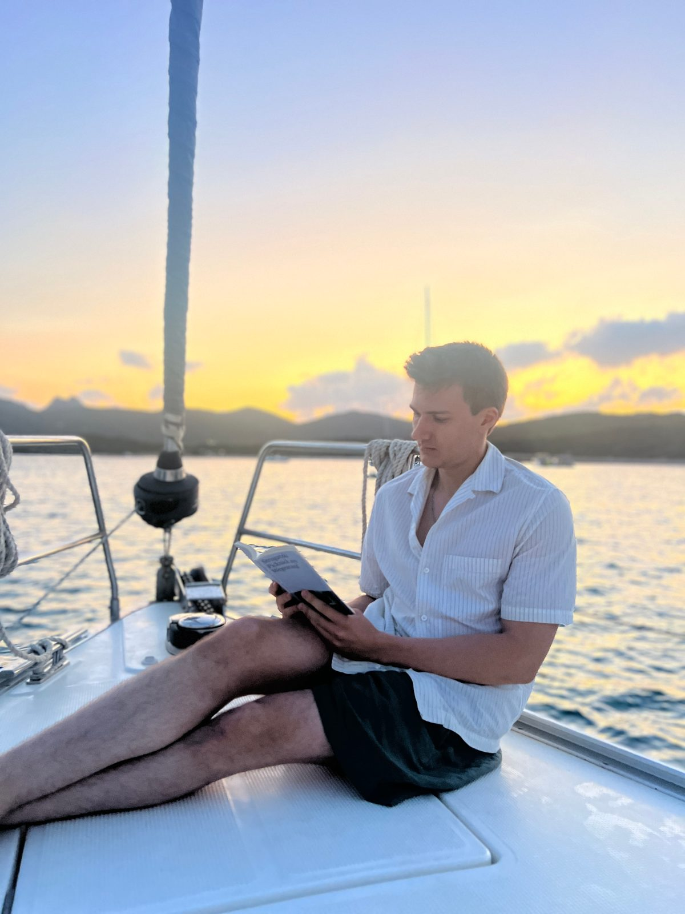

Vita
Dominik Jäkel schreibt tagsüber unter fremden Namen und abends unter seinem eigenen.
Er wurde 1995 in Dortmund geboren. In Freiburg studierte er Liberal Arts & Sciences, danach in Potsdam IT-Systems Engineering am Hasso-Plattner-Institut.
2016 und 2018 ging er für Freiwilligenprojekte mit AIESEC nach Colombo in Sri Lanka und nach Cotonou in Benin.
Vier Jahre lebte er in Kaohsiung auf Taiwan. Er arbeitete dort als Lektor und freier Autor, unter anderem für Sprachassistenten und Indie-Gaming-Studios. In Taiwan, das von einer starken Aboriginer-Kultur geprägt ist, begann seine Beschäftigung mit der Frühgeschichte des Menschen und die Arbeit an der Ursprungstrilogie der Zivilisation.
Seit 2022 lebt er in Berlin und schreibt beruflich für Unternehmen (vor allem für die Marketing- und Pricingberatung Simon-Kucher). Auf der Werkstattbühne des Autorenforums Berlin e. V. hat er viele seiner Geschichten gelesen; seit einigen Jahren ist er fester Bestandteil des Moderatorenteams. Längere Aufenthalte führten ihn seitdem nach Mallorca, Kapstadt, Sansibar und Buenos Aires.
2022 erhielt er den A.-E.-Johann-Preis. Gerade schließt er seinen Debütroman Satoshi ab. Das Manuskript liegt vollständig vor. Der Roman erzählt die Gründungslegende von Bitcoin als Liebesgeschichte dreier Menschen – und beschäftigt sich vor allem mit der Frage, was passiert, wenn das Vertrauen in Institutionen zerbricht.
Daneben arbeitet er an der Ursprungstrilogie, drei Romanen über die Anfänge der Zivilisation. Sie erzählen von der Geburt der organisierten Religion, der Literatur und der Heiligen Schrift, von Göbekli Tepe um 8000 v. Chr. über Uruk bis Jerusalem um 940 v. Chr.
Stationen
- 1995 Dortmund, geboren 51° 31′ N, 7° 28′ O
- 2014 Freiburg, Studium Liberal Arts & Sciences 47° 59′ N, 7° 51′ O
- 2015 Potsdam, Studium IT-Systems Engineering am Hasso-Plattner-Institut 52° 23′ N, 13° 04′ O
- 2016 Colombo, Sri Lanka, Freiwilligenprojekt mit AIESEC 6° 56′ N, 79° 52′ O
- 2018 Cotonou, Benin, Freiwilligenprojekt mit AIESEC 6° 22′ N, 2° 26′ O
- 2018 Kaohsiung, Taiwan, vier Jahre als Lektor und freier Autor 22° 38′ N, 120° 18′ O
- 2022 Berlin, seitdem Wohnort 52° 31′ N, 13° 24′ O
- 2022 A.-E.-Johann-Preis
- 2023 Mallorca, längerer Aufenthalt 39° 34′ N, 2° 39′ O
- 2024 Kapstadt, Südafrika, längerer Aufenthalt 33° 55′ S, 18° 25′ O
- 2025 Sansibar, Tansania, längerer Aufenthalt 6° 10′ S, 39° 11′ O
- 2026 Buenos Aires, Argentinien, längerer Aufenthalt 34° 36′ S, 58° 23′ W
Die Wohnorte und die ersten längeren Aufenthalte auf dem Globus.
